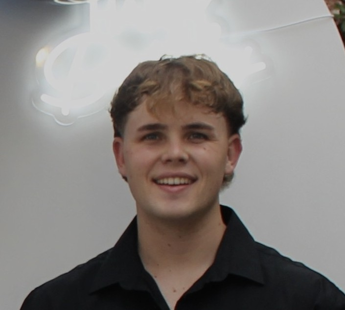

Cameron Richard de Moura
Aspiring Software Engineer
Summary:
21-year-old Software Engineering student seeking an internship. I am a
collaborative problem-solver with a strong team spirit and leadership
capabilities. Dedicated to growing my skills as a Junior Software
Developer.
Education:
-
Bachelor of Science in Information Technology (Software Engineering)
- Eduvos
- January 2025 – December 2027 (Expected)
- Currently entering 2nd Year
-
Professional Working Gap Years
- Gained practical work experience prior to tertiary studies
- January 2023 – December 2024
-
National Senior Certificate (Matric)
- King Edward VII School
- Class of 2022
Work Experience:
-
Project Coordinator & PA Support
- Miss Earth South Africa
- July 2024 – December 2024 & January 2023 – July 2023
-
Managed team logistics and oversaw project execution timelines.
-
Provided comprehensive Personal Assistant (PA) support to senior
management.
-
Handled administrative tasks and facilitated communication between
departments.
-
Technical Apprentice
- BrewBev
- August 2023 – June 2024
-
Worked in a technical apprenticeship role (Millwright stream) within
a manufacturing environment.
-
Gained hands-on experience with machinery and technical
problem-solving.
-
Developed strong workplace discipline and safety awareness before
transitioning focus to Software Engineering.
-
Freelance Bartender & Event Staff
- Various Vendors
- 2023 – 2024
-
Provided high-quality customer service in fast-paced event
environments.
-
Demonstrated reliability, adaptability, and strong teamwork under
pressure.
-
Managed cash handling and efficient service delivery during peak
hours.
Skills:
- Intermediate: C++
- Foundational: Web Development
- In Progress: Full Stack Web Development & C++
- Future Focus: Java & PHP
Get in Touch